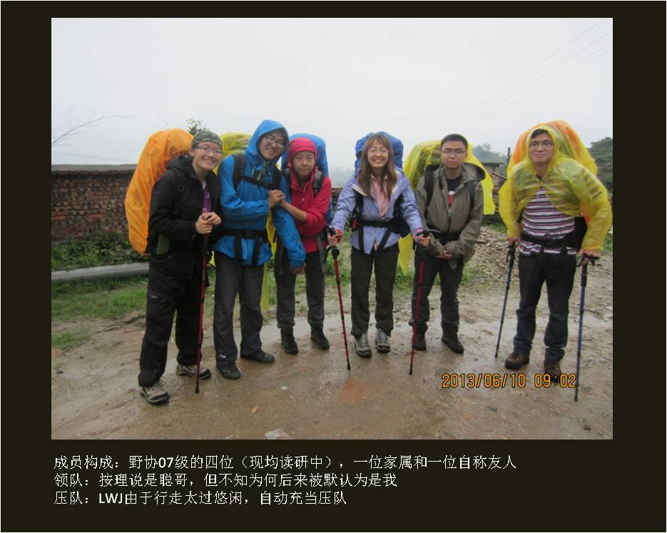

[转寄/推荐][转贴][删除][修改][设置可RE属性][上一篇][返回讨论区][下一篇][回文章][同主题列表][同主题阅读][从这里展开]
发信人: kitehuang (kitehuang), 信区: outdoor
标 题: 武功山半程攻略（多图）
发信站: 饮水思源 (2013年06月15日14:40:16 星期六)
前言
为啥毕业旅行的帖到现在还没上来啊？
不等啦，我先发帖啦~
端午没去走牯牛降，多少有点遗憾~但在武功山上的三天也是值得的~
——————————————————————————————————————
本攻略说技术不技术，说风景不风景，宗旨只有一个，告诉大家武功山并不难走。
武功山现在跟我当年见过的清凉峰一样有点人满为患了。
端午节这么多驴友中，有初次爬山的小白在风雨里缓缓爬到了最后，也有看天气不好就早
早下撤的老鸟。
总之事在人为，其实没啥走不下来的情况。
实在对体力没自信，还可以轻装走啊，反正一路都有客栈，有吃有住。最不济还有索道可
坐。
——————————————————————————————————————
端午节，由聪哥召集，我们07级继续教育小分队的4人聚在一起打算走武功山。
长久以来，武功山在我们心中一直是一条只有像HYP、财哥、严皓等强人才能走的线。
但是聪哥听说某人也去走过武功山之后，突然疑心武功山或许并不像想象中那么困难。
是的，挫人有挫人的走法。
像我们这样水平挫得一致的人，只要慢慢走就好了~
list上最初有八人，其中包括若干家属和科大某会前会长。
听说某会长会带着GPS加入的时候，我如释重负，结果最后他还是秒退了。
最后还是要靠自己，只好仔细研究了一下攻略和地图。
纠结了一下要不要请向导，最后还是作罢。事实上的确用不着。
然后就是联系包车，买火车票、买食物。端午节出行的人本就多，去萍乡和宜春的驴友也
比比皆是，一定要早作安排。想住客栈更是要早早预约。
——————————————————————————————————————
如果将沈子村-明月山看作武功山穿越的全线的话，从沈子村到发云界就是半程穿越。
野协大部分走过这条线的人都是从杨家岭上山、沈子村下山，听说松哥有反穿过，正穿反
穿的区别应该不大，总之这条线路可以算是三分之二穿越。
走杨家岭和沈家大院的主要目的是走羊狮幕，不过如果只是对草甸感兴趣的话，沈子村到
发云界的一路就足够了，发云界已经是草甸的边缘。
从沈子村到金顶再到白云客栈需要一天，从白云客栈到发云界需要一天，从发云界下山需
要三四个小时。当然体力好、又愿意早起的人完全可以两天搞定，走成短线。沿途客栈和
营地众多，无需担心落脚点的问题。
——————————————————————————————————————
我为记录此行的时间节点而拍了一系列照片，可作参考。
由于前两天风雨大作，视野很差，实在看不到多少草甸风景。不过反过来说，或许这样才
会走得比较轻松（心理上），不必对悬崖感到畏惧，也不必对绵延不止的山丘感到绝望。
 screen.width - 200){this.width = screen.width - 200}">
|


[转寄/推荐][转贴][删除][修改][设置可RE属性][上一篇][返回讨论区][下一篇][回文章][同主题列表][同主题阅读][从这里展开]